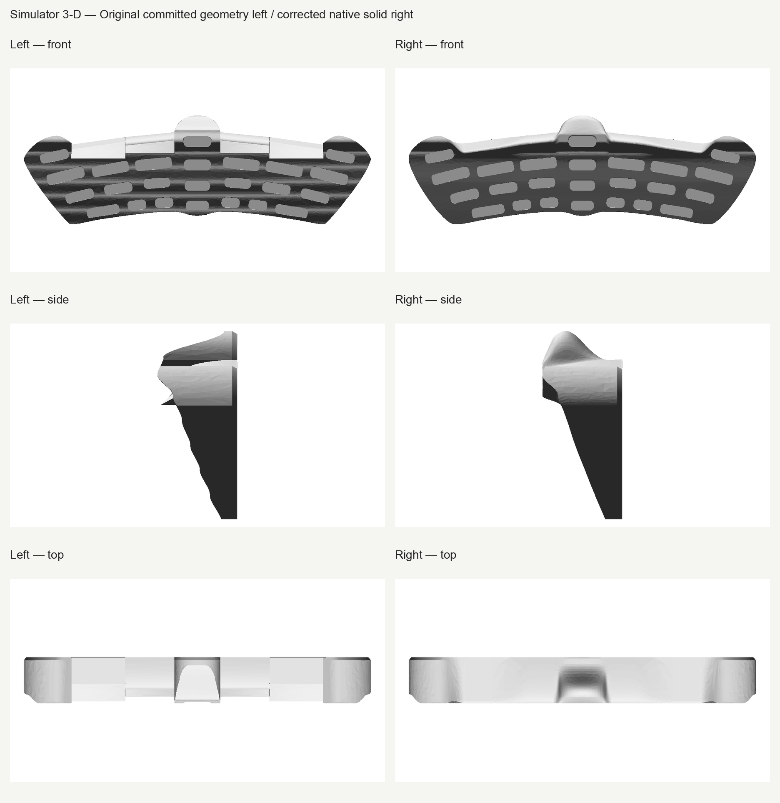
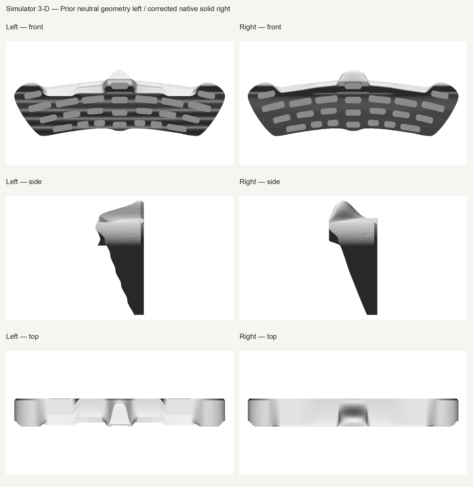
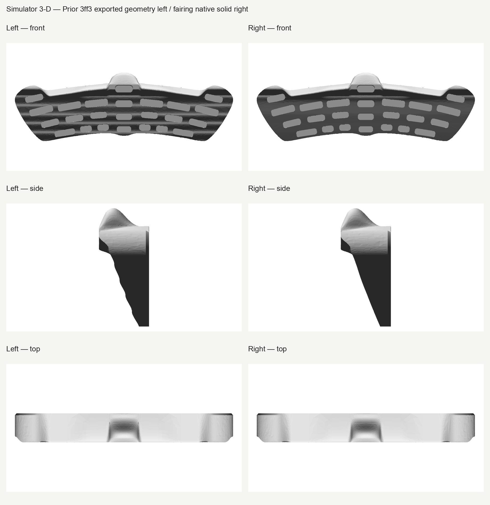
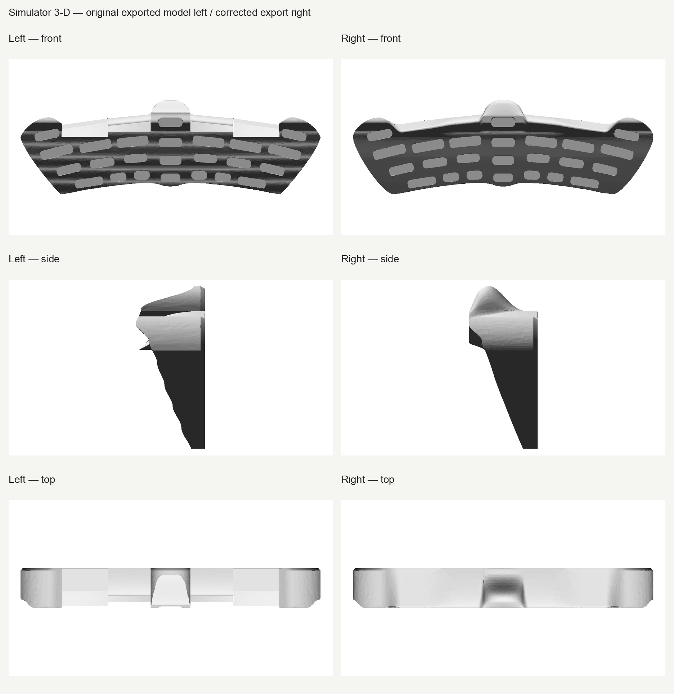
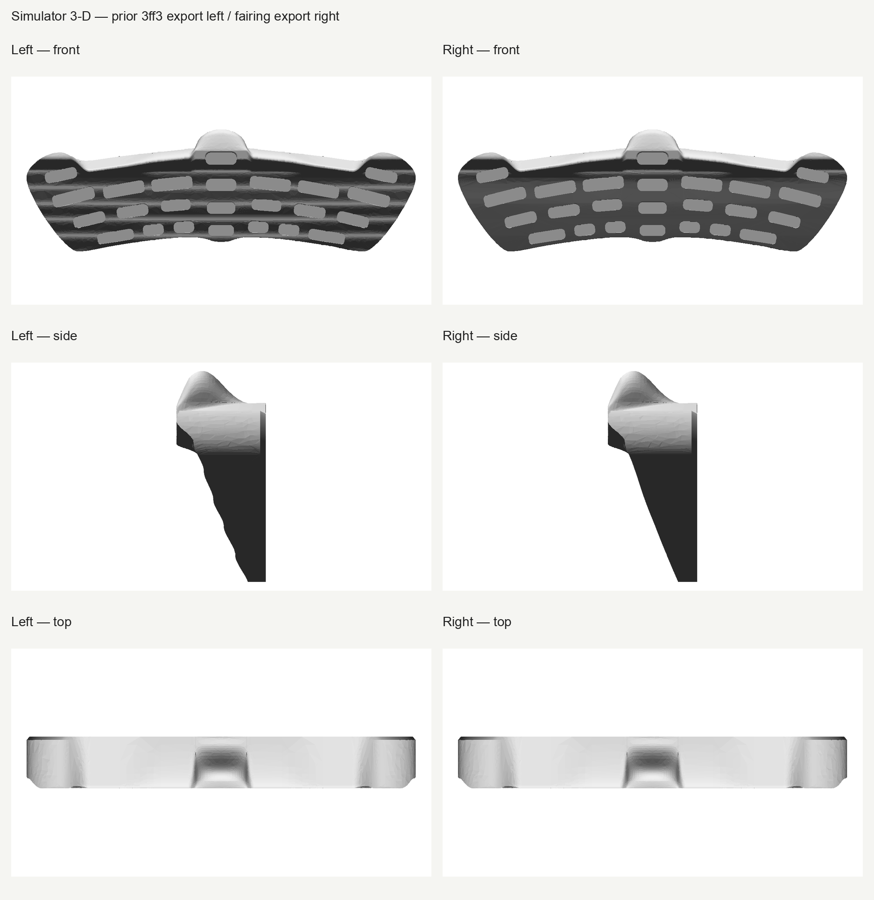
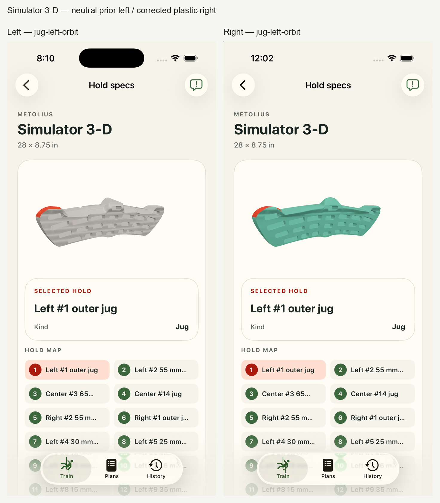
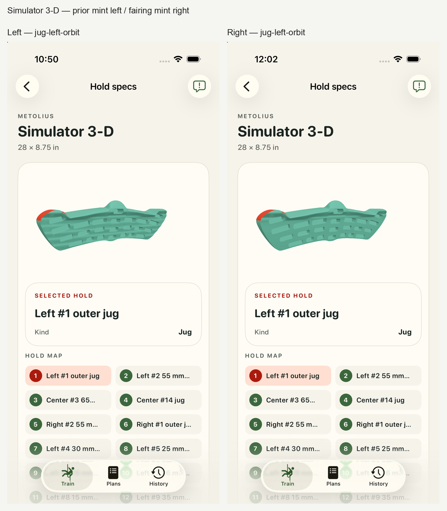

Fair lower front face, corrected center jug and forward slopers, with plastic display finish. Fresh actual-app inspection shows the broad waves removed and a clean rear face, with representative selection and drags preserved. Opus finds no blocker and recommends human review.
Human acceptance pending. Historical neutral-to-plastic app views include geometry and finish changes. The separate prior 3ff3-to-fairing app views keep the plastic finish on both sides. Mint is the app palette.







Overall thickness is measured 94.0007501 mm, a display estimate. Published 711 × 222 mm face dimensions and all 27 hold-depth checks retain their strict gates. Exact 94 mm thickness preservation is not claimed. At the retained ±0.0001 mm seam probes, sampled normal changes reach 2.0557°. Finite probes do not establish global roof G1 or C1 continuity. Estimated transitions, rounding, loft controls and thickness remain display geometry.
The five new lower-profile spans retain deliberate depth anchors and shared nonzero derivatives; their local continuity does not establish global roof G1/C1. Protected upper clipped native Boolean differences are exactly zero in both directions with no difference solids, while raw mass integrals differ 3.72537953mm³; selected upstream control bounds/areas/volumes are unchanged. This is scoped native equivalence, not a byte-identical BRep claim. All estimates require visual review; final exported topology/normal coverage limits must come from fresh export reports.
The center-jug rear return and finger-room profile are operator-selected display adaptations responding to user feedback. The retained manufacturer front photographs, comparison sheet and mounting instructions do not establish a definitive rear profile or any incut dimension. The 55/65 mm sloper support depths remain sourced; locating those support bands from the front backward is an explicitly labeled interpretation and display adaptation. No material chemistry, manufacturer mint color, global roof G1/C1 continuity or exact estimated thickness is claimed.
Representative coverage: eight complete frames per revision, five selected contacts and three actual drags. Historical neutral and 3ff3 frames are retained exactly.
Review details and Opus takes · Technical proof · Raw hashes · Manufacturer photograph · Numbered source diagram · Additional primary-source review · Immutable neutral history